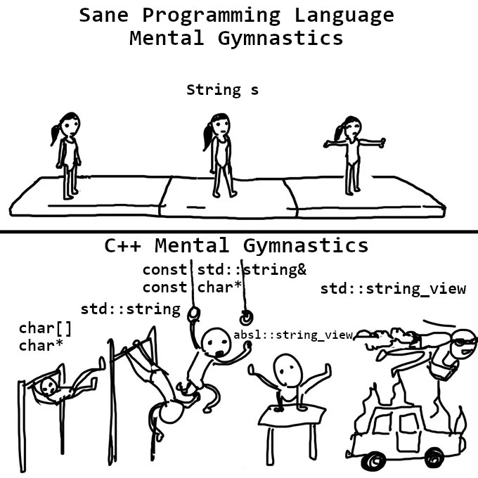
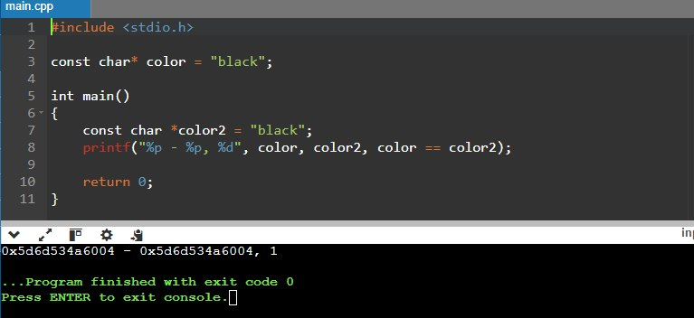
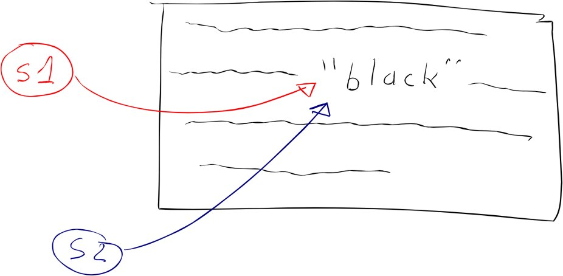

«String interning», иногда это называют «пулом строк» — это оптимизация, при которой хранится только одна копия строки, независимо от того, сколько раз программа ссылается на неё. Среди других оптимизаций по работе со строками (SWAR, SIMD-строки, immutable strings, StrHash, Rope string и немного других), часть которых была описана тут, она считается одной из самых полезных оптимизаций в игровых движках. Есть, правда, небольшие недостатки у этого подхода, но экономия памяти и скорость работы при правильной подготовке ресурсов и работе с лихвой их перекрывают.
Вы 100% когда-нибудь писали одну и ту же строку несколько раз в одной программе. Например: pcstr color = "black"; А позже в коде пришлось написать: strcmp(color, "black"); Как видите, строковый литерал "black" встречается несколько раз. Означает ли это, что программа содержит две копии строки "black"? Более того, означает ли это, что в оперативную память загружаются две копии этой строки? На оба вопроса ответ — зависит от компилятора и вендора. Благодаря некоторым оптимизациям в clang (Sony) и GCC, каждая строка-литерал хранится в программе только в одном экземпляре и, следовательно, только одна копия загружается в оперативную память, поэтому иногда становятся возможными разные фокусы.
Это часть серии «Game++»:
- Game++. String interning <=== Вы тут
- Game++. Cooking vectors
- Game++. Dancing with allocators
- Game++. Juggling STL algorithms
- Game++. run, thread, run...
- Game++. Building arcs
- Game++. Unpacking containers
- Game++. Heap? Less
- Game++. Work hard
- Game++. Patching patterns
- Game++. while (!game(over))
- Game++. Bonus. Performance traps
Например такой (https://onlinegdb.com/ahHo6hWn7):
const char* color = "black";
int main()
{
const char *color2 = "black";
printf("%p - %p, %d", color, color2, color == color2);
return 0;
}
>>>>
0x603cc2b7d004 - 0x603cc2b7d004, 1
А вот на Xbox этот трюк работать не будет:
00007FF6E0C36320 - 00007FF6E0C36328, 0
Виноват компилятор?
Да вроде нет. В стандарте вообще ничего не говорится об интернировании строк, поэтому это фактически является расширением компилятора, который может заниматься удалением дубликатов, а может и не заниматься, как вы поняли. И работать это будет только для строк, значения которых известны во время компиляции, что означает: если уже в рантайме код собирает одинаковые строки, то будет создано две копии. В других языках, таких как C# или Java, интернирование строк происходит во время выполнения, потому что .NET Runtime или Java VM реализуют эту оптимизацию что называется из коробки. В C++ у нас нет среды выполнения, которая могла бы выполнить эту оптимизацию, поэтому она происходит только на этапе компиляции, но зато у нас есть игровой движок и приданные программисты, которые могут это сделать.
Ой, хватит заниматься этой чёрной магией
Если по каким-то причинам вы вдруг захотите отключить эту оптимизацию и работать MS-стайл в clang — есть флаг -fno-merge-constants. Эта же оптимизация отвечает за удаление дубликатов для числовых констант с плавающей запятой.
К сожалению, эта оптимизация очень хрупкая: существует множество способов её нарушить. Вы видели, что она работает нормально с const char*, и то не везде:
// Количество копий: 1 в rodata, 1 в RAM
const char* s1 = "black";
const char* s2 = "black";Если же мы изменим тип на char[], программа создаст копию литерала при создании переменных:
// Количество копий: 1 в rodata, 3 в RAM
const char s1[] = "black";
const char s2[] = "black";Аналогично, если мы изменим тип на string, конструктор создаст копию строки:
// Количество копий: 1 в rodata, хз сколько в RAM будет, если такое положить в хедере
const string s1 = "black";
const string s2 = "black";Сравнение строк
Теперь, когда вы увидели некоторые особенности при работе с такими строками на разных платформах, а также знаете, как можно сломать эту оптимизацию, можно посмотреть на сравнение строк с помощью оператора ==. Все ведь знают, что использование оператора == для типов указателей, в том числе и для литералов, приводит к сравнению адреса, а не содержимого? Два одинаковых строковых литерала могут иметь одинаковый адрес, когда компилятор смог их объединить, или разные адреса, когда не смог.
const char* color = "black";
if (color == "black") { // true, потому что работает интернирование строк
// ...
}Магия — но на плойке работает. Всё хорошо, но плохо, потому что это перестаёт работать, как только одна из строк не попадёт в оптимизацию.
const char color[] = "black";
if (color == "black") { // false, потому что color хранит копию
// ...
}Может, кому-то покажется это прописной истиной, почему крайне нельзя использовать оператор == для сравнения строк типа char*? Но такое, блин, сплошь и рядом: за прошлый год я поймал 6 (шесть! в 2024 году, 4 случая в пятницу, 1 в пятницу 13-го, два случая от одного и того же человека) случаев, когда литералы сравнивались через указатели и приводили к разного рода багам, и примерно столько же попыток было отловлено на код-ревью. Похоже, некоторые забыли, что надо использовать функцию strcmp(), которая является частью стандартной библиотеки и сравнивает символы по одному, возвращая 0, если строки совпадают (она также возвращает -1 или +1 в зависимости от лексикографического порядка, но это здесь не важно).
const char color[] = "black";
if (strcmp(color, "black") == 0) { // true, потому что сравниваются каждый символ
// ...
}Читаемость, конечно, уменьшилась, подвержена ошибкам и надо помнить правила работы с strcmp, но это наше наследие от plain C и все более-менее понимают, как с этим жить. Ну и перф, конечно, страдает, особенно на синтаксически похожих данных.
Не совсем строки
Есть идеи, как растёт фрагментация памяти при использовании строковых данных? Из прошлого опыта по использованию обычных string и их аналогов в движке Unity — суммарный размер составлял от 3% до 6% от размеров дебажного билда, 3% набегали из-за фрагментации, когда мелкая строка удалялась, но в этот участок памяти ничего другого не помещалось. Средний размер строковых данных (в основном ключей) составлял 14–40 байт, и эти дырки были везде. Согласитесь, от 30 до 60 мегабайт «свободной памяти» на гиговом iPhone 5S — достаточная причина, чтобы попытаться оптимизировать её и забрать себе, ну, например, для текстур.
К тому же эти данные не нужны в релизе, они нужны только для отладки. Сами строковые данные можно вообще безопасно удалить из релизных сборок, оставив только хеши. Как минимум — это обезопасит или усложнит возможность взлома ресурсов игры. Добавьте сюда линейный аллокатор в отдельном участке памяти и вы получите возможность убрать вызванную строками фрагментацию из билда насовсем, когда всё будет сделано. И вот эти 6% тестовых данных превращаются в менее чем 1% хешей (4 байта на хеш), а освободившуюся память мы точно найдём куда пристроить.
xstring color = "black";
xstring color2 = "black"
if (color == color2) { // true, потому что вызывается xstring::operator==()
// ..
}
if (color == "black") { // true, потому что вызывается xstring::operator==()
// ..
}На кончиках пальцев
Разработчики давно придумали разные реализации, которые позволяют делать interning данных. Когда моя команда интегрировала это решение в Unity 4, мы вдохновлялись доступными исходниками на гитхабе и решениями из GCC, но по условиям open-source лицензии тот код нельзя было напрямую взять для использования, поэтому писали своё. Что-то подобное я недавно увидел уже в библиотеке stb, вот прям дежавю какое-то (https://graemephi.github.io/posts/stb_ds-string-interning/).
Есть несколько областей, где применяется много, очень много сырых текстовых данных, но они (строки известны заранее) могут быть захешированы: либо во время выполнения, либо в процессе обработки контентного пайплайна. В движке это префабы, экземпляры сцен, модели и части процедурных генераций. Обычно они используются как независимые экземпляры или как шаблоны, которые могут быть дополнены другими данными или компонентами. Ещё это:
- Литералы, хешируемые в скриптах
- Имена тегов в префабах и сценах
- Строковые значения свойств
Как идея это выглядит довольно просто: это довольно простая таблица поиска, которая сопоставляет идентификаторы строкам.
namespace utils {
struct xstrings { eastl::hash_map< uint32_t, std::string > _interns; };
namespace strings
{
uint32_t Intern( xtrings &strs, const char *str );
const char* GetString( xstrings &strs, uint32_t id );
bool LoadFromDisk( xstrings &strs, const char *path );
}
}В релизе во время выполнения движок или игра может загрузить файл с хешами и значениями строк, если это требуется для отладки. В дебаге же можно создавать такие строки прямо по месту вызова, это, конечно, немного дороже, но код выглядит читаемым. Когда мы только начинали интегрировать эту систему в Unity, у нас был отдельный объект для генерации xstring с различными масками, это было связано с тем, как Unity внутри хранил строковые данные, и было выгоднее заранее нагенерить себе нужные идентификаторы, чтобы они все лежали друг за другом и быстрее обрабатывались, если нужно было пройтись по какому-то массиву свойств. К тому же в четвёрке Юньки был ещё локальный для объекта кеш компонентов, который подгружал несколько следующих компонентов объекта для более эффективного доступа.
xstring tableId = Engine.SetXString( 'table', 'prop', 0 );Эта функция приводила к созданию и хешированию таких строк, как table0prop, table1prop вплоть до table15prop. Уже не нужно было отдельно создавать table15prop, потому что движок уже сделал это. Но это всё особенности устройства конкретного движка, не вижу смысла на них останавливаться, к тому же прошло уже почти 10 лет, может, там вообще всё новое придумали.
Позже, благодаря простоте и всеядности этой системы, я использовал её с незначительными вариациями в других проектах и движках. Что до конкретной реализации, то её можно посмотреть здесь (github.com/dalerank/Akhenaten/.../xstring.h). Вкратце расскажу, как работает код, он и на самом деле очень простой.
struct xstring_value {
uint32_t crc; // контрольная сумма строки
uint16_t reference; // сколько осталось ссылок
uint16_t length; // длина строки
std::string value; // сырые данные, сейчас тут std::string
// но могут быть любые структуры, заточенные под проект
};
class xstring {
xstring_value* _p;
protected:
void _dec() {
if (0 == _p)
return;
_p->reference--;
if (0 == _p->reference)
_p = 0;
}
public:
xstring_value *_dock(pcstr value);
void _set(pcstr rhs) {
xstring_value* v = _dock(rhs);
if (0 != v) {
v->reference++;
}
_dec();
_p = v;
}
...
}Структура xstring_value хранит метаданные для строки, в конкретной реализации в качестве хранилища std::string выбран просто для удобства, в каноническом виде там был bump-аллокатор, который просто размещал новую строку в конце (надо помнить про грамотное использование таких xstring) буфера, так гарантировалось, что строки всегда живы. Класс xstring создавал новую строку (если такой ещё не было) и запоминал указатель на то место в памяти, где она размещена, либо получал указатель на существующую копию, если совпадал хеш. В принципе, это все основные моменты, которые требуются для работы, я же говорил, что всё очень просто. Ниже приведён код, который размещает строку в пуле, здесь опять же выбрана std::map ради удобства, да и просто лень было возиться с написанием бамп-аллокатора, он лишь немногим выигрывает по скорости, но немного проигрывает по памяти. Но общий подход серьёзно выигрывает у стандартных строк std::string по времени создания, если они идут через системный аллокатор (malloc/new), и по скорости сравнения.
Неинтересная реализация
std::map<uint32_t, xstring_value*> data;
mutex _m; // spinlock ?
xstring_value *dock(pcstr value) {
if (nullptr == value) {
return nullptr;
}
std::scoped_lock _(_m);
// calc len
const size_t s_len = strlen(value);
const size_t s_len_with_zero = s_len + 1;
assert(sizeof(xstring_value) + s_len_with_zero < 4096);
// setup find structure
uint16_t length = static_cast(s_len);
uint32_t crc = crc32(value, uint32_t(s_len));
// search
auto it = data.find(crc);
// it may be the case, string is not found or has "non-exact" match
if (it == data.end()) {
xstring_value *new_xstr = new xstring_value;
new_xstr->reference = 0;
new_xstr->length = length;
new_xstr->crc = crc;
new_xstr->value = value;
data.insert({crc, new_xstr});
return new_xstr;
}
return it->second;
}
xstring_container *g_xstring = nullptr;
xstring_value *xstring::_dock(pcstr value) {
if (!g_xstring) { g_xstring = new xstring_container(); }
return g_xstring->dock(value);
}Как использовать
Классический вариант использования таких строк сводится к генерации из скриптов и ресурсов либо объявлению в коде строк-констант. Если вы обратили внимание на класс xstring, то у него есть дефолтный оператор сравнения, и так как сам класс по сути это POD int32_t, все проверки сводятся к сравнению целых чисел. Десять лет назад это дало буст к перфу анимаций чуть меньше 30%, и в целом использование таких строк вкупе с другими оптимизациями сделало возможным запустить Sims Mobile на iPhone 4S, когда игра позиционировалась для шестого поколения, и немножко для пятого, а наши заокеанские коллеги не считали такое в принципе возможным.
struct time_tag {
float12 time;
xstring tag;
};
struct events {
static const xstring aim_walk;
static const xstring aim_turn;
};
void ai_unit::on_event(const time_tag &tt) {
if (tt.tag == events().aim_walk) {
ai_start_walk(tt);
} else if (tt.tag == events().aim_turn) {
ai_start_turn(tt);
}
ai_unit_base::on_event(tt);
}Ещё немного по этой теме:
- foonathan/string_id — библиотека на C++ для создания уникальных идентификаторов для строк через интернирование. Отображает строковые литералы в уникальные ID.
- Понимание интернирования строк — подробное объяснение интернирования строк, его преимуществ и того, когда и как его эффективно использовать.
- Блог об интернировании строк — статья глубже рассматривает концепцию интернирования строк, предлагая как теоретическое обоснование, так и практическое применение для производительности в играх.
- libstringintern — библиотека на C++, реализующая интернирование строк для более эффективного управления памятью.
- Интернирование строк в C++ — статья фокусируется на интернировании строк в контексте C++. Объясняется, как интернирование строк может снизить использование памяти и улучшить производительность.